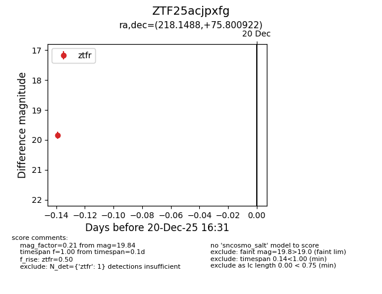
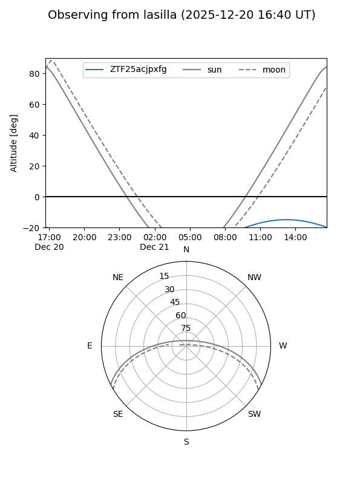
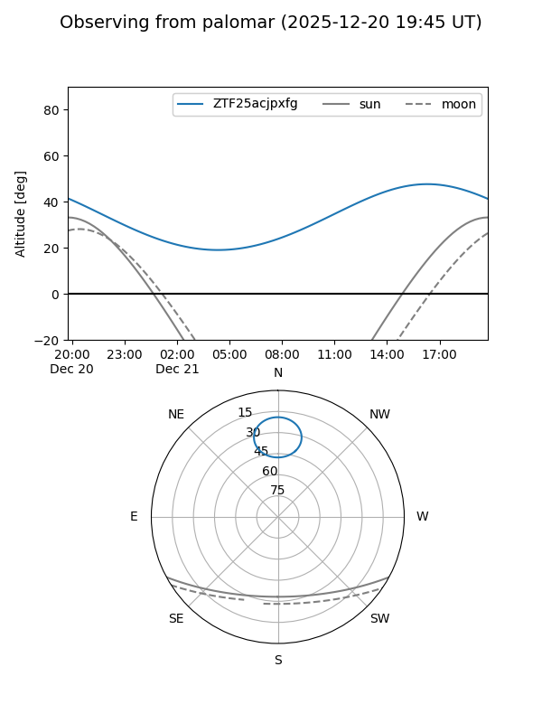

ZTF25acjpxfg
Target ZTF25acjpxfg at 2025-12-20 16:32
Aliases and brokers:
FINK: fink-portal.org/ZTF25acjpxfg
Lasair: lasair-ztf.lsst.ac.uk/objects/ZTF25acjpxfg
ALeRCE: alerce.online/object/ZTF25acjpxfg
alt names
ZTF25acjpxfg (ztf,fink_ztf)
Coordinates:
equatorial (ra, dec) = 218.1488,+75.80092
equatorial (HMS+DMS) = 14:32:35.70,+75:48:03.32
galactic (l, b) = (115.0987,+39.74992)
Flags:
Photometry:
last ztfr=19.84
1 ztfr detections
Lightcurve

Visibility


Additional plots